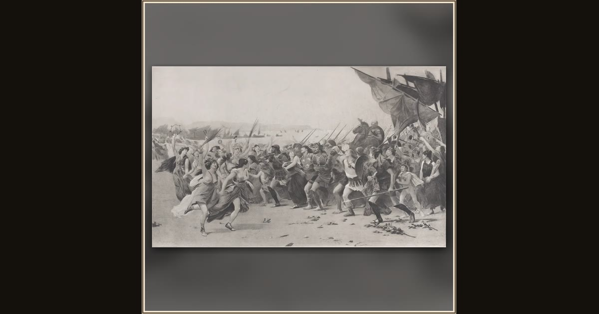

The Vanquishers of Salamis
Gebbie & Husson Company, Ltd. · 1889 · met
A photogravure shows a victory procession with armed men and dancing women beside the shore. Herodotus records the Greeks gathering wrecks at Salamis after the naval battle (8.96). Explore its place in Herodotus's Histories, Book VIII, chapter 204.